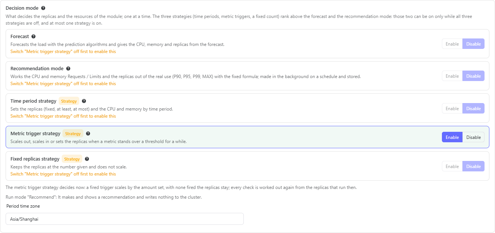
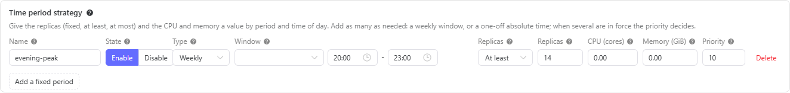
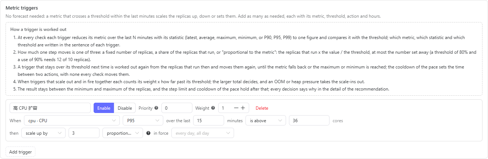

Decision mode: five, one at a time
It is chosen in the first section, "Decision mode", of the module strategies group in the module form. It answers one question: what decides the replicas and the resources of the module.
| Mode | How it decides the replicas and the resources | Fits |
|---|---|---|
| Forecast | Forecasts the load with the prediction algorithms; the CPU, memory and replicas come from the forecast. | A load with a pattern, capacity prepared ahead. |
| Recommendation mode | No forecast: the fixed formula works the CPU and memory Requests / Limits of one Pod and the recommended replicas out of the real use (P90, P95, P99, MAX). | A recommendation that rests on real use only and can be explained. |
| Time period strategy | Sets the replicas (fixed, at least, at most) and the CPU and memory by time period. | A known business window, such as an evening peak. |
| Metric trigger strategy | When a metric crosses a threshold over some minutes: scale out, scale in or set the replicas. | Reacting to a metric directly, without a forecast. |
| Fixed replicas strategy | The replicas stay at the number given and nothing scales them. | Stateful services and others whose replicas must not be changed automatically. |

The forecast and the recommendation mode are two independent calculations: each is configured, calculated and stored on its own, and they are never mixed. The run mode is another thing: the decision mode answers "how it is worked out", the run mode "what is allowed" (see Run mode). A new module has none on: it only collects data and keeps the fallback defaults.
Exclusive, and which ranks higher
- At most one of the three strategies (time periods, metric triggers, fixed replicas) is on.
- The forecast and the recommendation mode can be on only while all three strategies are off, and not both at once.
- The three strategies rank above the forecast and the recommendation mode: if a stored module has several on (data of an older version), the strategy is carried out and the forecast and the recommendation are not.
To change in the form, switch the one that is on off and then the new one on; the Enable button of the others is greyed and says which one to switch off first. The platform checks the same rules when it saves a module and when it copies parameters between modules, and refuses a request that breaks them, with the reason.
An upgrade tidies up once: a module with enabled periods or triggers gets the switch of that strategy on; with several, the fixed count wins, then the periods, then the triggers; a module with a strategy on has its forecast and recommendation mode off; a module in bypass is switched off (the bypass is retired: a module that does nothing is a module that is off).
Each mode shows only its own parameters
| Mode that is on | Settings shown in the form |
|---|---|
| Forecast | The forecast mode (dynamic, fixed algorithm, none), data and forecast period, capacity and replicas, coefficients, the lowest score. |
| Recommendation mode | The coefficients (target shares of P90, P95, P99, the margins, the Limits multiple, the sustain window) and the resource floor and cap. |
| Time period strategy | The time zone, the periods, and the replica pace. |
| Metric trigger strategy | The time zone, the triggers, and the replica pace. |
| Fixed replicas strategy | The fixed replicas; no pace, because the replicas do not move. |
Settings every mode has: basic information and the run mode, the metrics, the replica bounds (minimum and maximum), the OOM and JVM protections, the fallback defaults, the node pool. The bounds always have the last word over the result.
Recommendation mode
A background task, every 10 minutes by default (it can be changed in the task center), reads the real CPU and memory use of the module, takes the P90, P95, P99 and the maximum, and works the Requests of one Pod out with the target shares and margins of "Coefficients"; the Limits are the use times a multiple. The total use of all the Pods over the Requests of one Pod gives the recommended replicas and how many more or fewer than now. The result is stored in the database and the operator and admission read it, so nobody has to open the resource dashboard. With too little data the result is marked uncertain and the operator does not follow it.
Read it under "Recommendations and Execution > Resource Recommendations", each figure with its basis; the resource dashboard lists the latest background calculation at the top of its page. The data comes from Prometheus with the same basis as the resource dashboard, see Resource dashboard.
Fixed replicas strategy
Once on, the replicas stay at the number given; the forecast, the recommendation mode, the triggers and the periods do not decide them. The minimum and maximum still hold, so a number outside them is pulled back and says so. 0 cannot be switched on.
Time period strategy
Set the replicas for a time: weekly repeating (for example 20:00-03:00 every day; an end before the start crosses midnight) or one-off with a start and an end, in the module's time zone. The replicas of a period can be:
- Fixed: that number for the period.
- At least: if the replicas that run are below the number they are raised to it.
- At most: if they are above it they are lowered to it.
CPU and memory are fixed when filled in. With no period in force the replicas stay (the number that runs; they do not go back to the fallback default). When periods overlap: of the fixed ones, the higher priority wins; the largest at-least and the smallest at-most apply, and an at-least above an at-most wins. The result is still held to the minimum and maximum of the replicas.

Metric trigger strategy
A trigger has the parts below, and a module can have several:
| Field | Meaning |
|---|---|
| Name, priority | The name is unique in the module; when triggers ask to set different counts the larger number wins. |
| Weight | When triggers that scale out and triggers that scale in fire together, each counts its weight x how far past its threshold (just past it counts once, a full threshold past it or more twice); the larger total decides the direction and a tie goes to scaling out. Give the metric you trust more the larger weight. |
| Metric | A metric of the module's sources, or the JVM heap share (heap used / heap maximum). The threshold is in the unit of the metric: a metric that is the sum of all replicas takes a sum, a per-Pod metric a per-Pod figure. |
| Statistic, window | The latest, mean, maximum, minimum, or P90, P95, P99 over the last N minutes (15 by default). The "mean" is the arithmetic mean of every sample in the window; to keep a single spike from deciding, use P90, P95 or P99. |
| Comparison, threshold | Greater than, at least, less than, at most. |
| Action, amount | Scale out, scale in, or set to N replicas. The amount of a scale is written one of three ways: a fixed number of replicas, a share of the replicas that run, or "proportional to the metric". |
| In force | Weekdays and the start and end of the day, in the module's zone; empty is all day. |
How much one step moves, and what a repeated trigger does
- A fixed number, a share: each time the trigger fires it moves that much, for example "memory use over 90%: add 1".
- Proportional to the metric: the replicas that run x the value / the threshold, at most the number set away. With a threshold of 80, a use of 90 and 10 replicas, 12 are needed, and with an amount of 1 this step adds just 1. The size of the step follows the gap; the threshold must be above 0.
- A trigger that fires again: if the metric is still over the threshold at the next check it is worked out again from the replicas that run then and moves them again, until the metric falls back or the maximum (minimum) is reached; the cooldown of the replica pace sets the time between two actions, and with none every check moves them. So the limits of a run of scale-outs are three: the maximum of the replicas, the step limit and the cooldown.
- No trigger fired: the replicas stay at the number that runs.
Example: "when the P95 of the CPU of all replicas over the last 15 minutes is above 36 cores, scale out proportional to the metric, at most 3 at a time, every day 09:00-18:00."

When several triggers fire: a set takes the highest priority (the larger on a tie); a scale-out takes the largest increase and is not lowered by a set; a scale-in acts only with no set and no OOM or JVM heap pressure, and of several the one that removes the fewest counts. Scale-outs and scale-ins that fire together are weighed, the larger total decides and a tie goes to scaling out; during an OOM or heap-pressure protection the scale-ins leave the vote and the scale-outs act as usual. Every decision records why in the detail of the recommendation.
Suggestions
- Run the forecast or the recommendation mode for a while first, and change to a strategy once the effect is seen; when changing, switch the one that is on off first.
- The at-least of a period can follow the peak hours and the busiest replicas in "Normal and high-load hours" of the resource dashboard.
- A metric trigger wants a metric that shows pressure and a cooldown; to be deaf to a spike, pick P95 rather than the maximum.
- A target can have only one replica controller: do not run with an HPA or KEDA, see One controller per target.